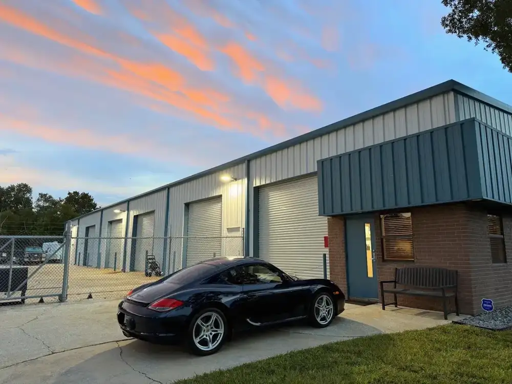
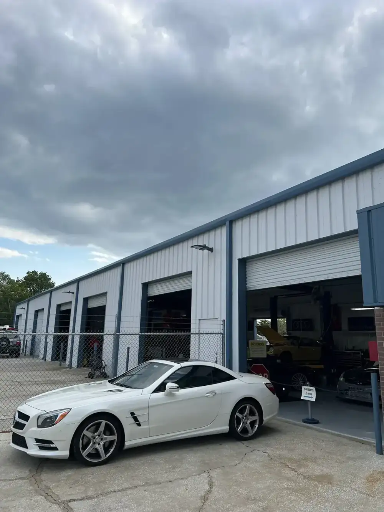
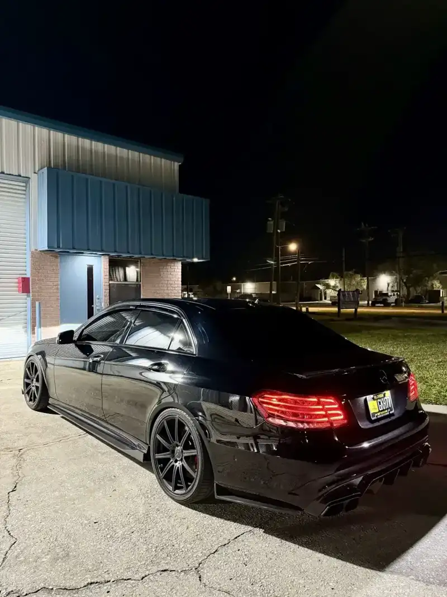
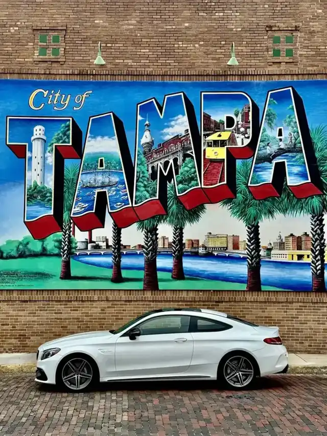
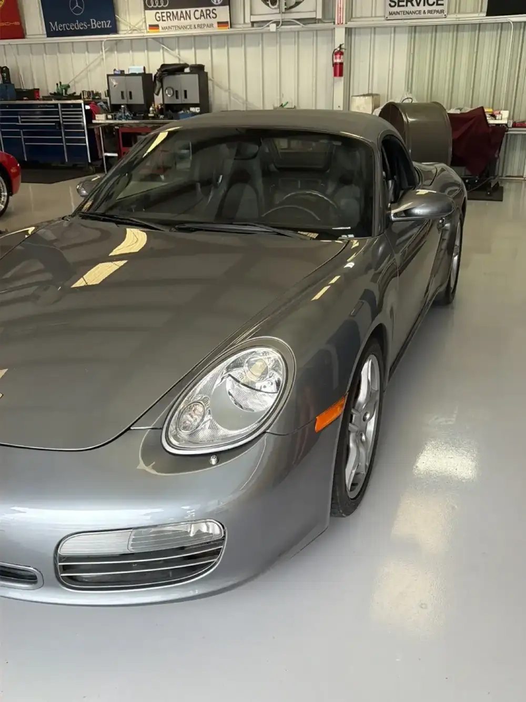
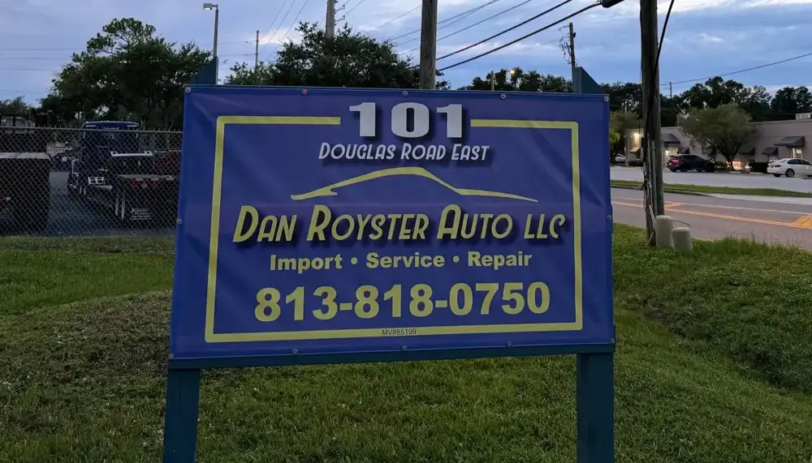
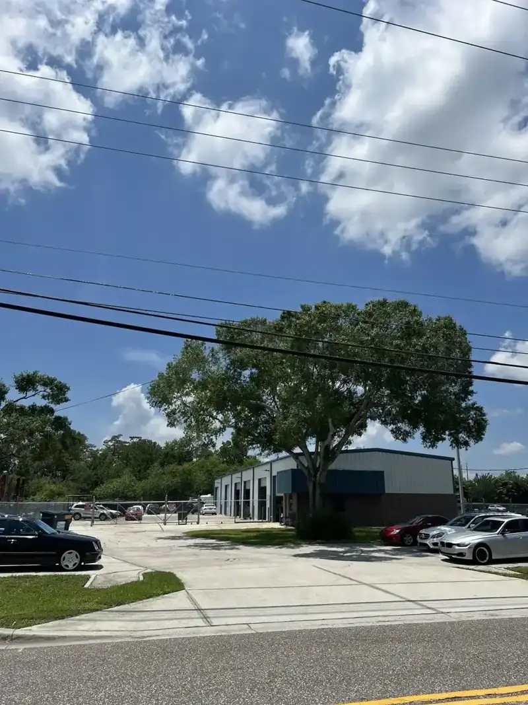

Porsche service and repair
The shop's specialty. Customers bring 911s, Boxsters and Caymans, from a 1997 993 to newer cars.
993 911, Boxster, CaymanImport service & repair · Oldsmar, FL
Dan Royster handles repairs personally and tells you what is wrong, what it needs and what it will cost before the work starts.

Open Monday to Friday
(04) About

Dan Royster Auto is an import service and repair shop at 101 Douglas Rd E in Oldsmar. The blue sign out front says it plainly: Import, Service, Repair.
Owners of Porsches, from a 1997 911 to newer cars, call Dan their go-to mechanic. Reviewers say he takes time to understand the issue, explains the repair, and keeps customers informed from start to finish. When a job is outside what the shop can do, he says so and even helps load the car onto the transport truck.
(01) Services
Porsche service and repair is the specialty. Other makes are welcome, and Mercedes show up in the lot too.
The shop's specialty. Customers bring 911s, Boxsters and Caymans, from a 1997 993 to newer cars.
993 911, Boxster, CaymanOne owner's 911 had a leaking brake pressure regulator losing fluid. It was repaired and the car drives like new.
Pressure regulator, Fluid loss, Brake repairA failed gear shift linkage on a 1997 Porsche was repaired, and the car shifts smoothly again.
Shift linkage, DrivetrainA buyer's inspection found a replaced transmission, worn motor mounts, mismatched tires and missing lug nuts, and the buyer walked away.
Pre-purchase, Written reportWorn mounts turn up in inspections and repairs, and the shop replaces them.
Motor mount repairA customer with a dead battery was helped in a pinch, and said it saved their day.
Dead battery, Quick help(02) The workshop






(03) Clients
1I have my Porsche 911 (993) serviced at Dan Royster Auto, and I couldn't be more pleased with my experience. Recently, my 1997 Porsche had two issues: a failed gear shift linkage and a leaking brake pressure regulator that was causing brake fluid loss. Dan Royster handled the repairs personally, and the results were outstanding. My Porsche now shifts smoothly and drives just like new!
2Dan and his team are a pleasure to work with. They are completely transparent, professional and affordable. Dan is the best Porsche mechanic and technician I’ve ever worked with. He takes the time to understand the issues, explains what he’ll do and consistently exceeds my expectations. I’ve recommended Dan to all my friends
3Took a used car for an inspection before I purchasing for a new driver. Found out the transmission was replaced, needed motor mounts, 4 tires did not match and was missing lugnuts. All needed repairs "unknown" to the seller who is also a mechanic. Needless to say, I did not buy the car. Seller then drops a 1 star review because Royster would not let them stay in the room while I got the inspection report I paid for.
Hours & directions
101 Douglas Rd E, Oldsmar, FL 34677
The shop is on Douglas Rd E in Oldsmar, with customer parking out front. Closed Saturday and Sunday.